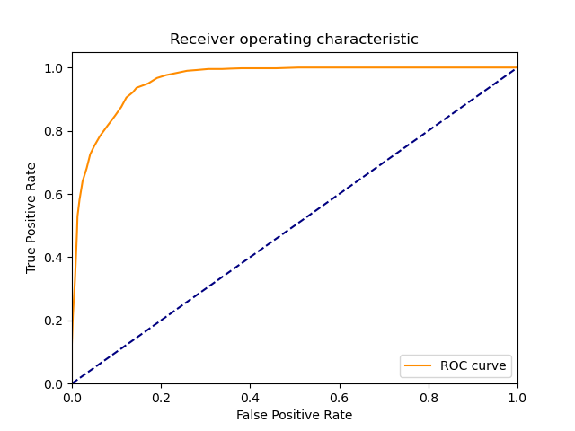
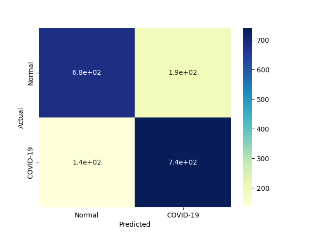
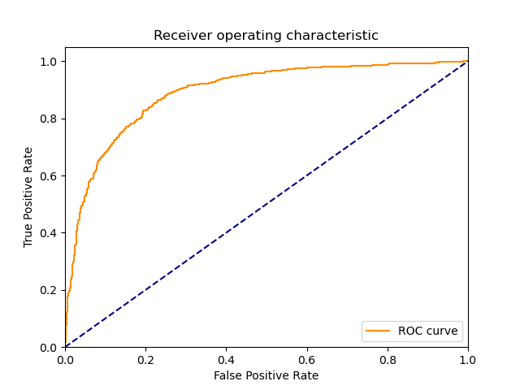
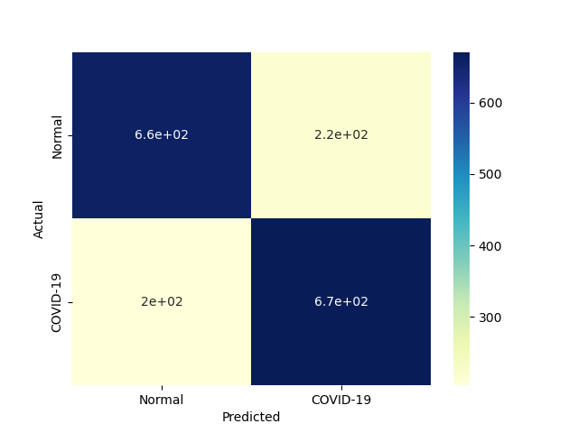
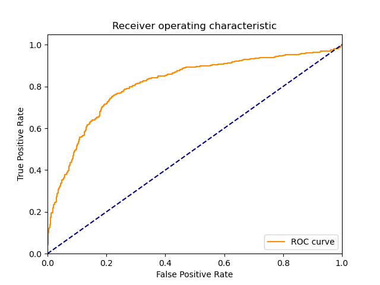
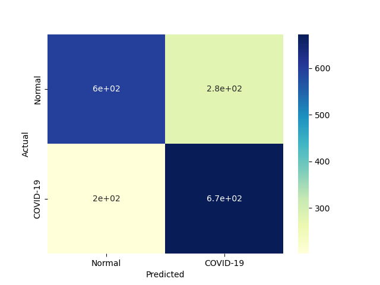
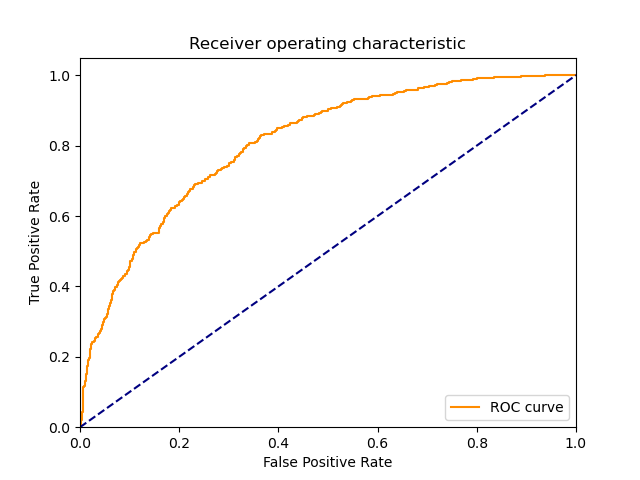
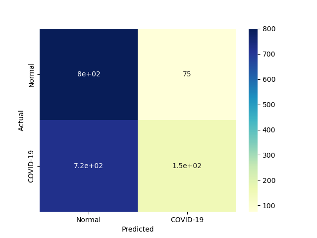
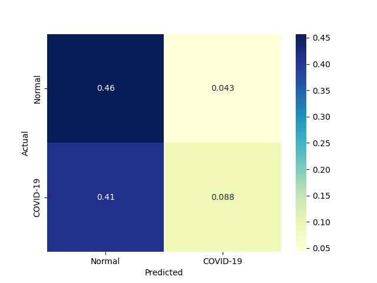
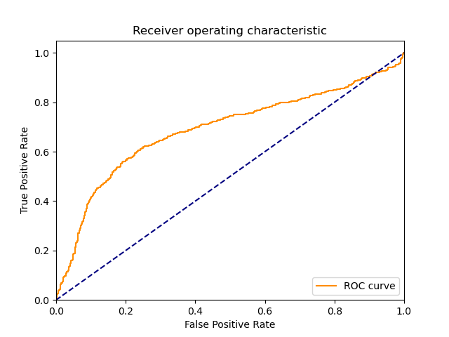

| 4 |
KNeighborsClassifier |
Classifier implementing the k-nearest neighbors vote |
0.000000 |
0.374977 |
792 |
768 |
107 |
83 |
0.905143 |
0.877714 |
0.880979 |
0.891429 |
0.108571 |
0.892897 |
1.723028 |
inf |
2.381207 |
|
|
 |
| 1 |
RealBoost |
An RealBoost classifier |
6.984056 |
0.031288 |
740 |
685 |
190 |
135 |
0.845714 |
0.782857 |
0.795699 |
0.814286 |
0.185714 |
0.819945 |
1.272289 |
0.117402 |
26.206637 |
 |
|
 |
| 3 |
GaussianNBC |
Gaussian Naive Bayes (GaussianNB) |
0.031254 |
0.015627 |
671 |
660 |
215 |
204 |
0.766857 |
0.754286 |
0.757336 |
0.760571 |
0.239429 |
0.762067 |
1.102600 |
24.383168 |
48.766336 |
 |
|
 |
| 2 |
BernoulliNBC |
Naive Bayes classifier for multivariate Bernoulli models |
0.031248 |
0.015626 |
673 |
596 |
279 |
202 |
0.769143 |
0.681143 |
0.706933 |
0.725143 |
0.274857 |
0.736727 |
1.020425 |
23.576699 |
47.146923 |
 |
|
 |
| 0 |
DiscreteNBC |
DiscreteNBC |
2.203161 |
1.140612 |
154 |
800 |
75 |
721 |
0.176000 |
0.914286 |
0.672489 |
0.545143 |
0.454857 |
0.278986 |
0.590134 |
0.126630 |
0.244593 |
 |
 |
 |
{kind=link}
{kind=link}
{kind=link}
{kind=link}
{kind=link}
{kind=link}
{kind=link}
{kind=link}
{kind=link}
{kind=link}
{kind=link}
{kind=link}
{kind=link}
{kind=link}
{kind=link}